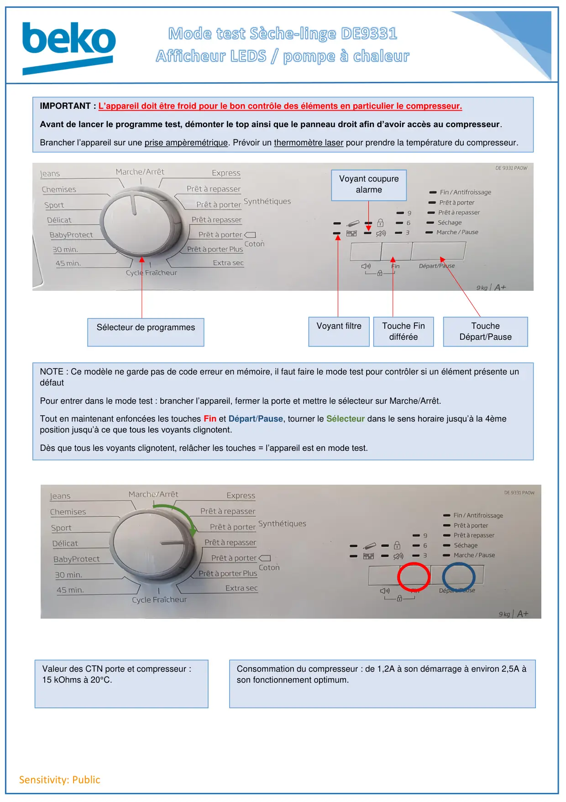
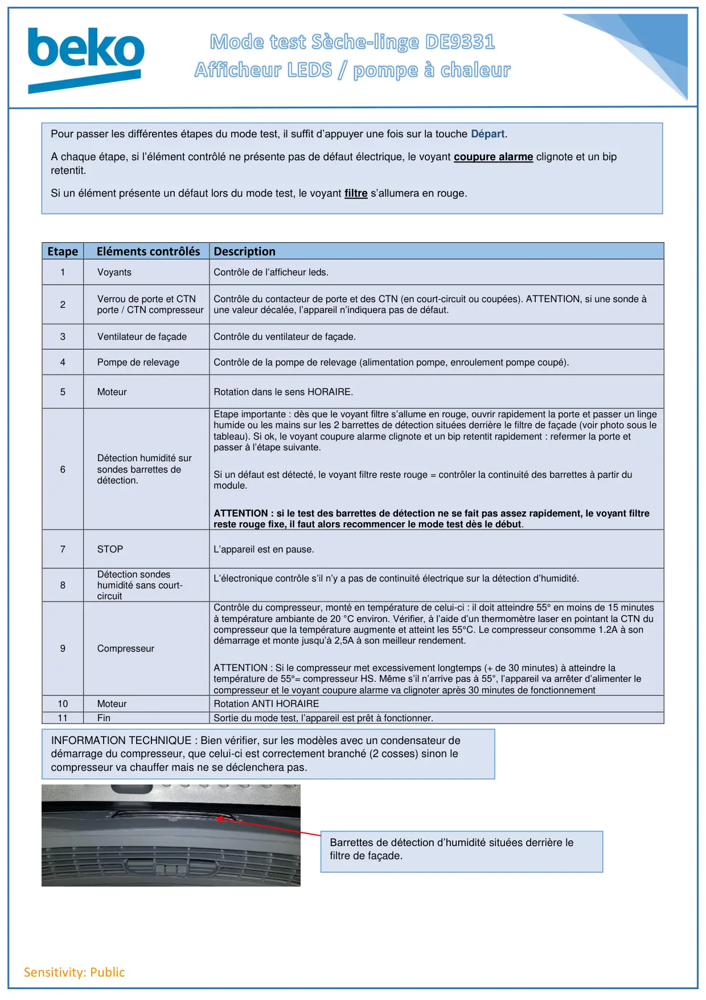

Mode test DE9331 afficheur leds B7S

Sensitivity: PublicIMPORTANT : L’appareil doit être froid pour le bon contrôle des éléments en particulier le compresseur.Avant de lancer le programme test, démonter le top ainsi que le panneau droit afin d’avoir accès au compresseur.Brancher l’appareil sur une prise ampèremétrique. Prévoir un thermomètre laser pour prendre la température du compresseur.Sélecteur de programmesVoyant filtreVoyant coupurealarmeTouche FindifféréeToucheDépart/PauseNOTE : Ce modèle ne garde pas de code erreur en mémoire, il faut faire le mode test pour contrôler si un élément présente undéfautPour entrer dans le mode test : brancher l’appareil, fermer la porte et mettre le sélecteur sur Marche/Arrêt.Tout en maintenant enfoncées les touches Fin et Départ/Pause, tourner le Sélecteur dans le sens horaire jusqu’à la 4èmeposition jusqu’à ce que tous les voyants clignotent.Dès que tous les voyants clignotent, relâcher les touches = l’appareil est en mode test.Valeur des CTN porte et compresseur :15 kOhms à 20°C.Consommation du compresseur : de 1,2A à son démarrage à environ 2,5A àson fonctionnement optimum.
1 / 2
Sensitivity: PublicEtape Eléments contrôlésDescription1VoyantsContrôle de l’afficheur leds.2Verrou de porte et CTNporte / CTN compresseurContrôle du contacteur de porte et des CTN (en court-circuit ou coupées). ATTENTION, si une sonde àune valeur décalée, l’appareil n’indiquera pas de défaut.3Ventilateur de façadeContrôle du ventilateur de façade.4Pompe de relevageContrôle de la pompe de relevage (alimentation pompe, enroulement pompe coupé).5MoteurRotation dans le sens HORAIRE.6Détection humidité sursondes barrettes dedétection.Etape importante : dès que le voyant filtre s’allume en rouge, ouvrir rapidement la porte et passer un lingehumide ou les mains sur les 2 barrettes de détection situées derrière le filtre de façade (voir photo sous letableau). Si ok, le voyant coupure alarme clignote et un bip retentit rapidement : refermer la porte etpasser à l’étape suivante.Si un défaut est détecté, le voyant filtre reste rouge = contrôler la continuité des barrettes à partir dumodule.ATTENTION : si le test des barrettes de détection ne se fait pas assez rapidement, le voyant filtrereste rouge fixe, il faut alors recommencer le mode test dès le début.7STOPL’appareil est en pause.8Détection sondeshumidité sans court-circuitL’électronique contrôle s’il n’y a pas de continuité électrique sur la détection d’humidité.9CompresseurContrôle du compresseur, monté en température de celui-ci : il doit atteindre 55° en moins de 15 minutesà température ambiante de 20 °C environ. Vérifier, à l’aide d’un thermomètre laser en pointant la CTN ducompresseur que la température augmente et atteint les 55°C. Le compresseur consomme 1.2A à sondémarrage et monte jusqu’à 2,5A à son meilleur rendement.ATTENTION : Si le compresseur met excessivement longtemps (+ de 30 minutes) à atteindre latempérature de 55°= compresseur HS. Même s’il n’arrive pas à 55°, l’appareil va arrêter d’alimenter lecompresseur et le voyant coupure alarme va clignoter après 30 minutes de fonctionnement10MoteurRotation ANTI HORAIRE11FinSortie du mode test, l’appareil est prêt à fonctionner.Pour passer les différentes étapes du mode test, il suffit d’appuyer une fois sur la touche Départ.A chaque étape, si l’élément contrôlé ne présente pas de défaut électrique, le voyant coupure alarme clignote et un bipretentit.Si un élément présente un défaut lors du mode test, le voyant filtre s’allumera en rouge.INFORMATION TECHNIQUE : Bien vérifier, sur les modèles avec un condensateur dedémarrage du compresseur, que celui-ci est correctement branché (2 cosses) sinon lecompresseur va chauffer mais ne se déclenchera pas.Barrettes de détection d’humidité situées derrière lefiltre de façade.
2 / 2